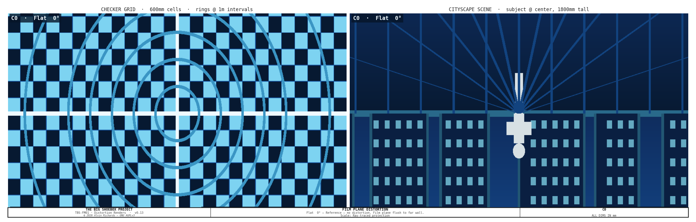
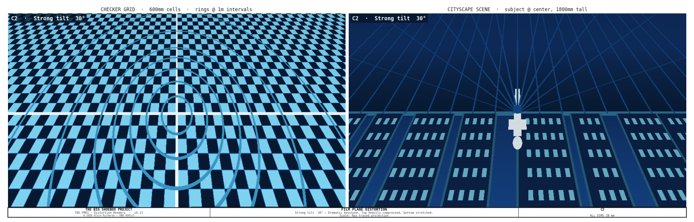
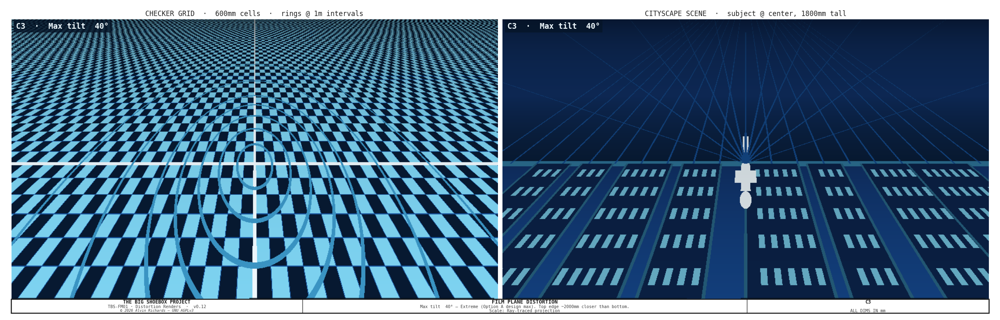
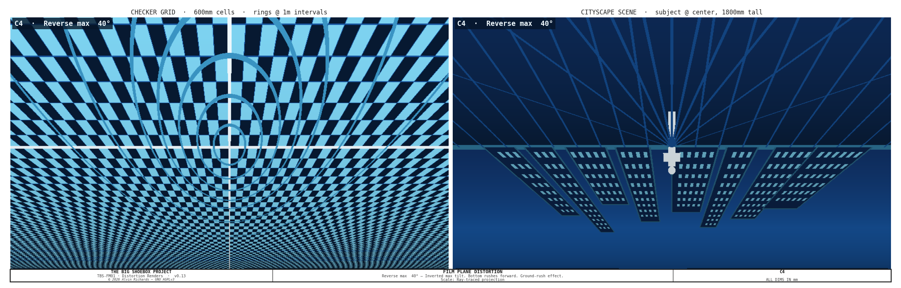
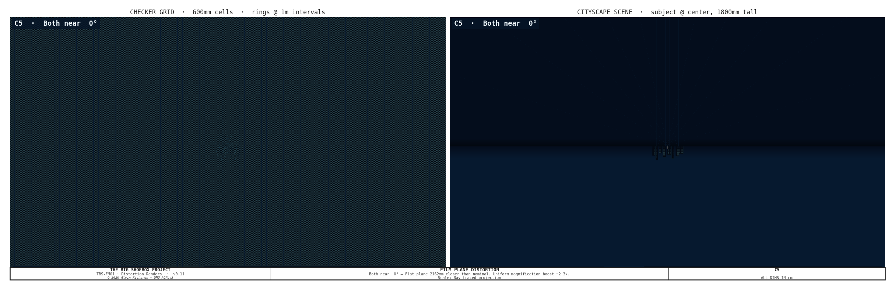

Moveable Film Plane — Optical Distortion Analysis¶
Scope note — this is the optical-distortion analysis¶
What this document is. The optical-distortion derivation for the moveable four-corner film plane: the physics of tilted-/swung-plane projection (§5), the movement envelope (§3), and the per-configuration effects (§4). The plane is a fixed-size rigid rectangle (4,389 × 2,094mm) that tilts and swings as a true rigid-body rotation — envelope tilt ±40° / swing ±28° (single-axis). The optics depend only on that rigid-rotation geometry.
Mechanism, hardware, and BOM are governed by
film-plane-mechanism-report.md— the current 6061 Al U-channel + acetal skate + 304 flat-bar cross-slide + Belden U-joint corner design — and the muslin clamp byfilm-clamp-mechanism-report.md. This analysis covers only the optics; for any hardware, quantity, or price, use those reports.
1. Purpose¶
The Giant Pinhole Camera uses a 20ft ISO shipping container as its light-tight body. In the default configuration the photosensitive film plane is flush against one of the 20ft long-side walls. It rides a view-camera-style moveable film plane — a mechanism with four corners driven in coordinated pairs (TL, TR, BL, BR) carrying a fixed-size rigid plane that changes only its angle, allowing tilt, swing, and limited combined movements comparable to a large-format view camera's rear standard. This document analyzes the optical distortion those movements produce; the mechanism itself is described in film-plane-mechanism-report.md.
2. Container Reference Geometry¶
| Dimension | Value | Notes |
|---|---|---|
| Interior length | 5,893mm (19 ft 4 in) | Film plane spans this direction |
| Interior width | 2,362mm (7 ft 9 in) | Optical axis = focal length |
| Interior height | 2,388mm (7 ft 10 in) | Container height; the active film plane is 2,094mm (mechanism-limited by the corner slides + walkway clearance) |
| Pinhole position | Center of one 20ft long-side wall | |
| Nominal film plane | Opposite 20ft long-side wall | flush to wall |
| Structural ribs | Every 457mm (18 in) along length | Rail mounting points |
3. Movement Axes¶
The four-corner mechanism supports all view-camera movements. Corners are labeled TL (top-left), TR (top-right), BL (bottom-left), BR (bottom-right) — where left/right refers to the rail span direction and top/bottom to the 7 ft 10 in height direction.
| Axis | Corners Controlled | Max Travel | Effect |
|---|---|---|---|
| Tilt (top) | TL + TR together | 100–2,262mm | Perspective convergence, keystone |
| Tilt (bottom) | BL + BR together | 100–2,262mm | Perspective convergence, keystone |
| Swing (left) | TL + BL together | 100–2,262mm | Left-right perspective skew |
| Swing (right) | TR + BR together | 100–2,262mm | Left-right perspective skew |
| Combined | All 4, kept coplanar | ≤±40° tilt + ≤±28° swing | Limited simultaneous tilt+swing — the plane stays a flat rectangle (no twist) |
| Back focus | All 4 together | 100–2,262mm | Uniform magnification change |
| Rise / Fall | All 4 together, offset vertically | ±200mm | Horizon shift |
| Shift | All 4 together, offset horizontally | ±300mm | Left/right perspective offset |
Maximum tilt angle (single-axis): ±40° — set by the corner cross-slide Z travel (~250mm); the depth rails alone would allow a steeper angle.
Maximum swing angle (single-axis): ±28° — set by the rail depth available over the 4,389mm span.
(Swing angle is smaller than tilt angle because the active film plane is 4,389mm wide — the left rail sits at X=260mm and the right rail at X=4,649mm. The same Y-axis depth difference over a wider span produces a shallower angle.)
Because the plane is a fixed-size rigid rectangle, its physical height stays 2,094mm at every angle — it does not grow. The corner cross-slides absorb the in-plane arc travel that a rigid rotation forces on each corner, so a single rigid backing panel suffices.
4. Tilt Configurations¶
The plane is always flat, so every achievable pose is a single tilt or swing (or a limited combination). Corner depths below are about the mid-rail center (1,181mm); the film height is constant because the plane is rigid.
| Config | Name | TL | TR | BL | BR | Tilt | Swing | Film Height |
|---|---|---|---|---|---|---|---|---|
| C0 | Flat | 1181 | 1181 | 1181 | 1181 | 0° | 0° | 2,094mm |
| C1 | Mild tilt | 977 | 977 | 1385 | 1385 | 11.0° | 0° | 2,094mm |
| C2 | Strong tilt | 622 | 622 | 1740 | 1740 | 31.5° | 0° | 2,094mm |
| C3 | Max tilt | 494 | 494 | 1868 | 1868 | 40.0° | 0° | 2,094mm |
| C4 | Mild swing | 923 | 1439 | 923 | 1439 | 0° | 6.6° | 2,094mm |
| C5 | Strong swing | 412 | 1950 | 412 | 1950 | 0° | 20.0° | 2,094mm |
| C6 | Max swing | 125 | 2237 | 125 | 2237 | 0° | 28.0° | 2,094mm |
Depths measured from the pinhole wall about the mid-rail center. Tilt = asin(2·Δd_top-bottom / FP_H) about the plane center (FP_H=2094); swing = asin(2·Δd_left-right / FP_W) (FP_W=4389). Rail positions: left X=260mm, right X=4,649mm.
A compound twist (diagonal, non-coplanar) is not achievable — a rigid plane cannot form a ruled surface. Combined tilt+swing is available only as a flat rotation within the ±40° / ±28° envelope.
5. Optical Distortion Analysis¶
Physics of Tilted-Plane Projection¶
In a pinhole camera, every scene point projects through the pinhole aperture onto the film plane. When the film plane is flat and perpendicular to the optical axis, the projection is standard central perspective:
film_x = −X · f / D
film_y = −Y · f / D
where f is the perpendicular distance from pinhole to film, and D is subject distance.
When the film plane is tilted (top edge at depth d_top, bottom edge at d_bot), the effective focal length varies continuously with height on the film:
f(v) = d_bot + (d_top − d_bot) · v (v = 0 bottom, v = 1 top)
When the film plane is swung (left edge at depth d_L, right edge at depth d_R), the effective focal length also varies with horizontal position:
f(u) = d_L + (d_R − d_L) · u (u = 0 left, u = 1 right)
In the compound case (tilt + swing simultaneously), the depth varies across the entire film surface as a bilinear interpolation of all four corner depths:
f(u, v) = d_BL·(1−u)(1−v) + d_BR·u(1−v) + d_TL·(1−u)v + d_TR·u·v
This varying effective focal length is the source of all the distortion effects described below.
Distortion Effects by Configuration¶
C0 — Flat (reference): Standard central projection. Vertical lines remain vertical, horizontal lines remain horizontal. The checker pattern is a regular perspective view.

C1 — Mild tilt 11°: Subtle keystone. The top of the image is slightly compressed. Useful for compensating converging verticals when photographing tall subjects close to the camera.
C2 — Strong tilt 30°: Dramatic keystone. Top of image has f ≈ 800mm — three times more compression than the bottom. Buildings appear to flare outward toward the base.

C3 — Maximum tilt 40°: Extreme effect. Top edge 100mm from pinhole wall — a 22× difference in effective focal length between top and bottom. The checkerboard transforms from squares at the bottom to near-horizontal slivers at the top.
Recommended for: wide open landscapes, aerial-perspective scenes, dramatic urban canyons.

C4 — Maximum tilt down (reverse) 40°: The inverse of C3. Ground plane is compressed, sky dominates. Standing subjects elongate dramatically toward the bottom of the frame.

C5 — Both edges near (uniform close): The entire film plane is 100mm from the pinhole. Effective focal length drops from 2,362mm to ~100mm — a 23.6× reduction. Field of view becomes enormous.

C6 — Compound tilt + swing: a diagonal twist (a ruled surface) is not producible — a rigid plane can only rotate flat, so there is no twist render; combined tilt+swing appears only as a flat rotation within the envelope (§3).
Summary Comparison¶
The six achievable flat configurations on a checker grid (D = 8,000mm):

6. Source References¶
- Film Plane Mechanism Report — the current four-corner mechanism, hardware, and bill of materials.
- Muslin Clamp System — the muslin spring-clip mechanism and its parts list.
- Tilt-Swing Front Board Report — front board mechanism for combined distortion analysis.
- Equipment Layout Report — rail positions and shadow-free zone verification.